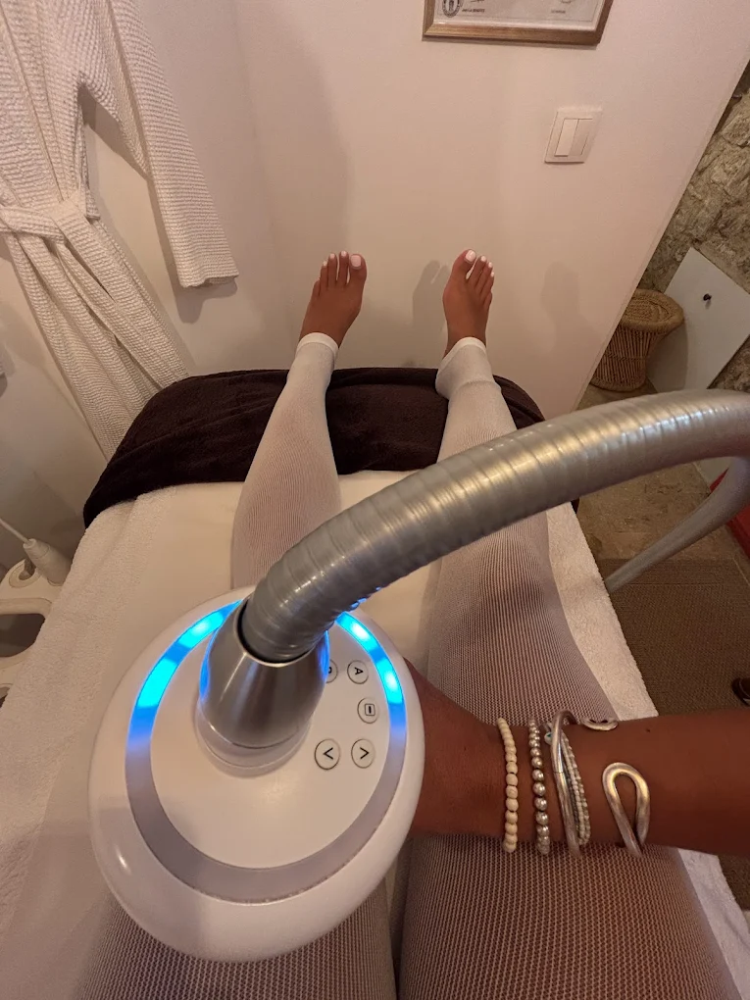

Le LPG endermologie de LUMIA à Manosque utilise la technologie Cellu M6 Alliance pour agir sur la cellulite, la fermeté, le drainage et la silhouette, sur le corps comme sur le visage, chez les femmes et les hommes. Chaque programme démarre par un bilan personnalisé avec photos de suivi, et le bilan est offert pour tout achat de forfait. La technique est non invasive, confortable et adaptée à votre objectif.
Le LPG pour le corps
Sur le corps, l'endermologie cible la cellulite sous toutes ses formes, adipeuse, aqueuse ou fibreuse, et relance les échanges de la peau. Plusieurs protocoles existent : anti-cellulite, soin jeune maman, détox et palper-rouler drainant, ou simplement relaxation. Le travail mécanique de la tête Alliance stimule la peau en profondeur pour la lisser et la raffermir.

Premier échange gratuit, réservez votre bilan
Le LPG pour le visage
Sur le visage, le LPG travaille zone par zone, du front au cou en passant par le regard, l'ovale, les mains ou le décolleté. Il raffermit, lisse et redonne de l'éclat, sans aiguille ni chirurgie. C'est une réponse douce aux premiers signes de l'âge, qui se marie très bien avec les soins du visage.
Un suivi personnalisé
Chaque parcours commence par un bilan où l'on définit ensemble vos objectifs. Des photos de suivi sont prises à la première, la sixième et la douzième séance pour mesurer la progression. Les cures se règlent en plusieurs fois sans frais, pour avancer sereinement.
Questions fréquentes sur le LPG
Combien de séances pour un résultat ?
Une cure de 10 à 12 séances est souvent recommandée pour un objectif marqué (cellulite, fermeté), avec des photos de suivi à la 1re, la 6e et la 12e séance. Le bilan personnalisé précise votre programme.
À quel rythme faire les séances ?
En général une à deux séances par semaine au début, pour enclencher les résultats, puis on espace en entretien. Le rythme est adapté à votre objectif et à votre peau.
Est-ce que le LPG fait maigrir ?
Le LPG n'est pas un traitement amaigrissant. Il agit sur l'aspect de la peau, la cellulite, la fermeté et le drainage. Associé à une bonne hygiène de vie, il affine et lisse la silhouette.
Est-ce douloureux ?
Non. La séance est confortable, beaucoup la décrivent comme un palper-rouler agréable et relaxant. L'intensité est réglée selon votre sensibilité.
Quelle différence entre le LPG corps et le LPG visage ?
Le LPG corps cible la cellulite, le drainage et la fermeté sur des zones comme le ventre, les cuisses ou les bras. Le LPG visage travaille en douceur l'ovale, le regard, le cou et le décolleté pour raffermir et lisser.
Le LPG complète idéalement nos soins du visage et notre épilation laser. Retrouvez le détail des prix sur la page tarifs et faites connaissance avec la praticienne.